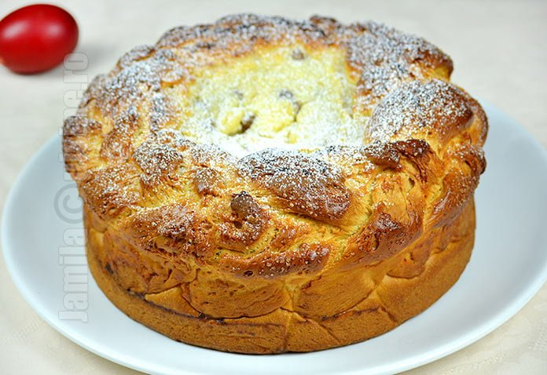

Pasca

This is a wonderful Romanian dessert that is served during Easter time.
You're in for a treat with a sweet filling of ricotta, lemon and raising.
Learn how to make this amazing treat with our recipe below!
Paska breads are a traditional element in the Easter holidays of Ukraine,
Armenia, Belarus, Romania, Russia, Georgia, Moldova and parts of Bulgaria,
as well as Turkey, Iran and the Assyrian–Chaldean–Syriac diaspora. Due to
its geographical closeness, it is also widespread in Slovakia.
Especially made for Easter, pască is a tart with a cozonac dough base
filled with fresh cheese like urdă or cottage cheese, raisins, eggs and
sugar. Other variants include sour cream, chocolate, or berries fillings.
Ingredients:
For the dough you'll need:
-
Active dry yeast – You can use instant yeast if that’s what you
have. If you use instant, you won’t need to bloom it first, but it’s a
good idea to test if it’s still alive. If your yeast doesn’t foam up
your yeast is dead and the bread won’t turn out.
-
Water – The water is used to bloom our yeast. Make sure it’s
lukewarm – you can test with your finger. It needs to be warm to the
touch, not hot. If it’s too hot it will kill the yeast.
-
Milk – I used whole milk (3.25%) but you can use whatever is in
your fridge.
-
Butter – I only use unsalted butter. This way I have full control
over the sodium in my recipes.
-
Lemon zest – I know 2 tablespoons seems like a lot, but this
recipe makes a pretty large pasca. The lemon is what really makes this
bread taste so incredible! You can, of course, add less or more
depending on your tastes.
-
Sugar – This bread is meant to have a touch of sweetness. You can
add a little more or less if you’d like.
-
All-purpose flour – You can use bread flour for this recipe if
you’d like. The difference is that you’ll get a bit more gluten
formation. If you use gluten-free flour, make sure to get a protein such
as xanthan gum to replace the gluten.
- Eggs – Use large eggs for this recipe.
-
Vanilla – The way the vanilla warms up the lemon zest is just
irresistible!
For the filling you'll need:
-
Ricotta cheese – You can use a low-fat ricotta if you’d like.
Since this is the star of the show for your filling, getting a good
quality ricotta will taste so amazing.
-
Sugar – You can adjust the amount of sugar in the filling to suit
how sweet you’d like it to be.
-
Eggs – The eggs are used to bind the filling and keep everything
together without spilling out when you slice the pasca.
-
Lemon zest – The lemon makes the flavor of this filling really
pop! You can add more or less zest if you’d like.
-
Vanilla – Just like in the dough, the vanilla tastes incredible
paired with the lemon zest in your filling.
Steps:
-
Bloom the yeast: Dissolve the yeast in the warm water. You can
add a tablespoon of sugar from the sugar needed for the dough to help
activate the yeast. Let it sit for 10 minutes until it has foamed up
nicely. If your yeast doesn’t get foamy, don’t move forward. Buy a new
jar and store it in the freezer so it lasts longer.
-
Dissolve the sugar: In a saucepan, add the milk, butter, lemon
zest, sugar, and vanilla. Stir over medium heat just until the sugar
dissolves a bit. We don’t want the mixture to boil or get too hot. It
should just be warm to the touch. Remove from heat and whisk in the
eggs.
-
Finish the dough: Add the flour, yeast mixture, and milk mixture
to the bowl of your mixer. Knead it with the dough hook for about 5
minutes until it’s soft and elastic. Remove the dough, spritz the bowl
with cooking oil, place the dough back in, cover with a clean kitchen
towel, and let the dough rise until doubled in size.
-
Make the filling: Whisk the filling ingredients together, cover
with plastic wrap, and store in the fridge until you’re ready to use it.
-
Assemble the pasca: Split the dough into 4 equal-sized pieces.
Spritz them with some cooking spray so they don’t dry out. Roll one of
the pieces out until it’s about 10″ in diameter. Split the other 3
pieces in half, and roll each piece into a 36″ long rope. Read below for
instructions on braiding the ropes. Wrap the braid around the edge of
the 10″ rolled circle of dough. Pour the filling into the center, and
leave the pasca to rise for 20 minutes.
-
Bake the pasca: While you wait for your bread to rise, preheat
the oven to 350F. Brush with egg wash then bake for 40 to 45 minutes, or
until nicely browned. The centre will still be a bit jiggly when you
take it out.